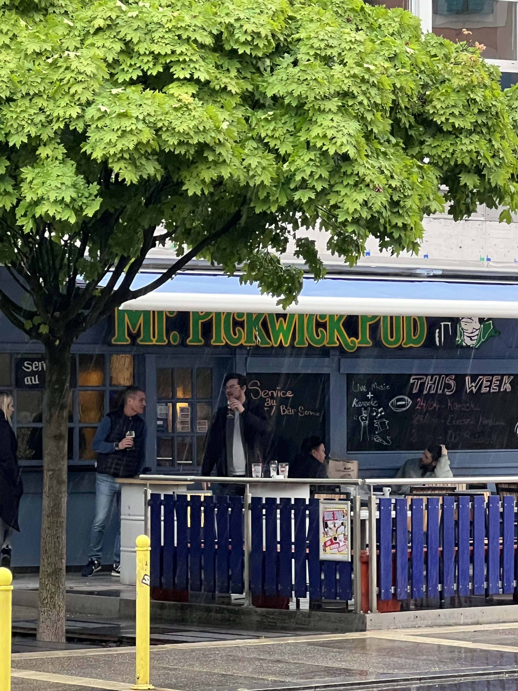
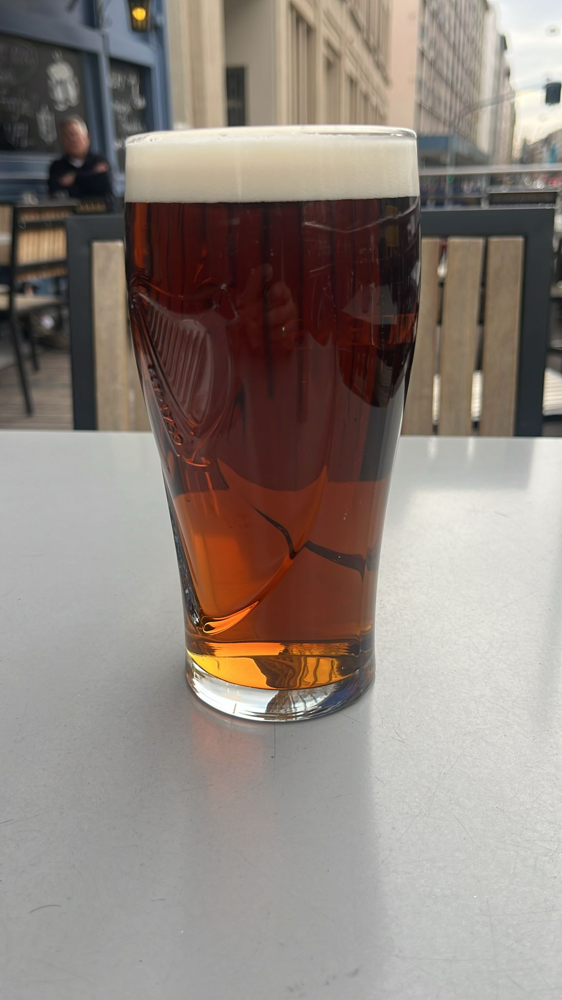
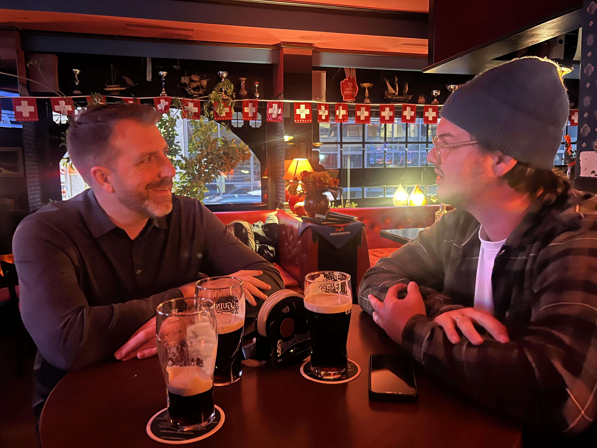
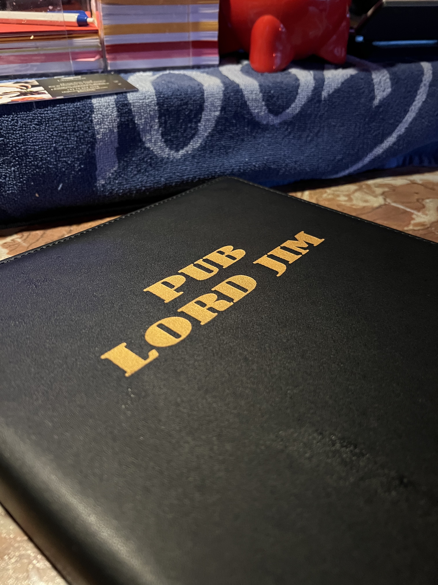
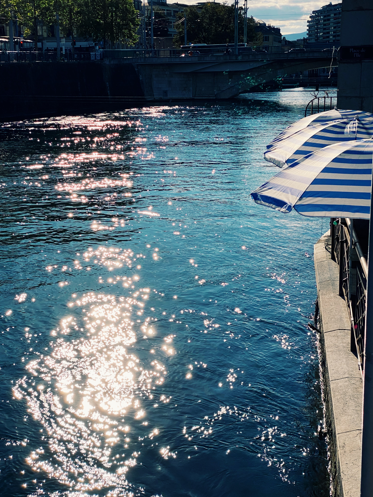
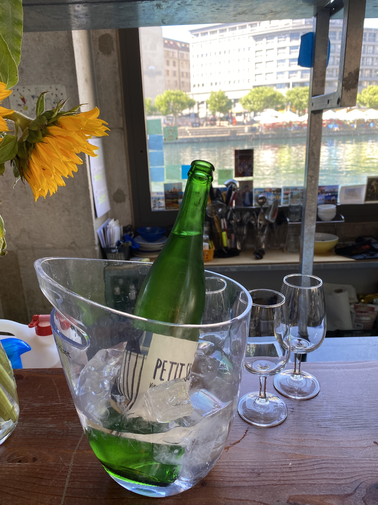
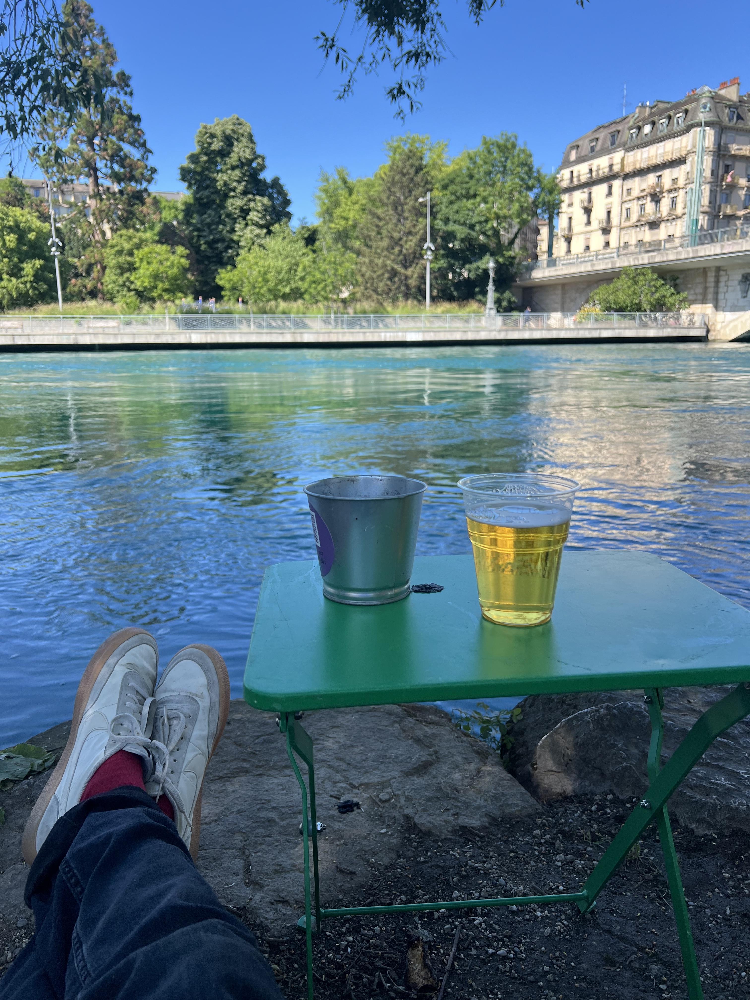
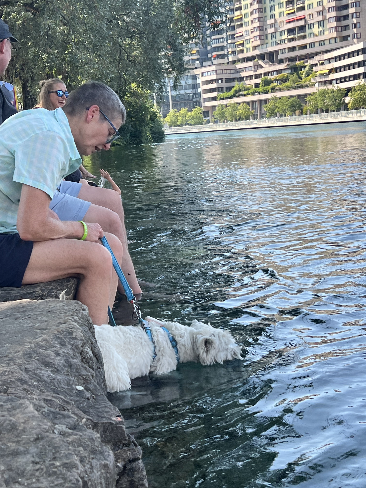
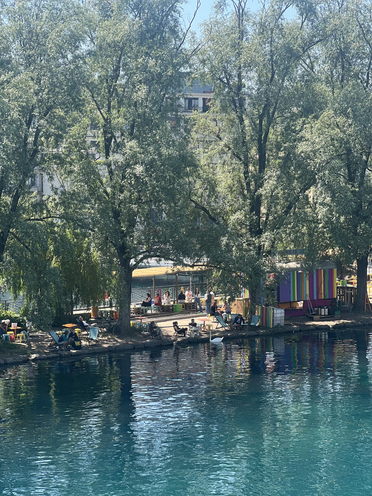

You work at the UN or a UN adjacent organization in Geneva, you finish a long day doing whatever it is you do up there at Nations, and before you head home to your loving family for dinner, you want to have a cheeky pint and decompress with your friends from work. Here's the best places to get that cheeky pint in as you head down the hill.
01 · The bubble · Probably skip
Medusa
Nations · Geneva · Get directions →
Closest to the UN. Will get you a cheeky pint or a glass of wine. Worth noting it only opens at 5pm — and it's a bit too close to the UN ecosystem to relax and have an open conversation, for fear that the person you're talking about is sitting two tables over. My advice: get a bit further out of the area before you say anything you'd regret.
02 · Also the bubble
Arianna
Nations · Geneva · Get directions →
Right next door to Medusa, same energy, same caveat. Same 5pm opening. If Medusa is full and you can't be bothered to walk further, this is your fallback. But again — too much UN, not enough wind-down. Get on the 15 tram and go one stop further.
03 · On the 15 tram line
Mr. Pickwick Pub
Plainpalais · Geneva · Get directions →
The first stop out of the bubble. Now, I'm not a big Pickwicks fan if I'm being honest. The outside aesthetic gives Eugene, Oregon — Boulder, Colorado — 80s college campus. The inside is way bigger than you'd imagine. The staff are great, super friendly. And I don't mean to complain, but there's just something off about Pickwicks.

Pickwicks. Blue facade, green lettering, the tree out front. Ideal tram-stop access.
That said: it's directly on the 15 tram line, making it the fastest place to get a cheeky pint and hop back on the tram heading home. The best thing to order at Pickwicks — despite looking like a place that would serve a good Guinness — is actually the Murphy's Irish Red. I can't explain it. Something about that creamy red pint just hits better at Pickwicks. Trust me.

The Murphy's. Order this, not the Guinness.
04 · Two stops further
Pub Lord Jim
Plainpalais · Geneva · Get directions →
Two more stops down the 15 tram line, you find an oddball little place called Pub Lord Jim. Every time I go here I actually say: hey, this place is great. The inside feels like an old-school LA joint. Red leather booth seats, 90s music videos on a TV, and most importantly — the most affordable pint of Guinness in town.


I think they have a happy hour — if you leave work real early, until about 4:30 — where you can get two pints of Guinness for under 10 CHF. Incredible stuff. And even at full price they clock in around 8 CHF, which is still the cheapest pint in town. Fun fact about Pub Lord Jim: they were the first place in Geneva to get Guinness on tap. The guy working there was proud of that.
Last word on Pub Lord Jim: something about it just never really calls you back. Can't explain. Maybe go three times a year.
05 · Behind Cornavin
La Petite Reine
Cornavin · Geneva · Get directions →
Onward with the 15 tram line: get off at Cornavin. From here you have two directions you can go, thirsty traveller. If you want a grungier experience, cut through the train station to the other side, and there's a very un-Geneva type place called La Petite Reine. Everything is covered in graffiti. A lot of people I work with love this place — perhaps because of its proximity to the train station, making it ideal from a time-management perspective. The beers work. Good option to have.
06 · The favourite
Mulligans Irish Pub
Saint-Gervais · Geneva · Get directions →
My favourite cheeky place in town. About five minutes' walk from Cornavin, head towards Manor and tuck into the best pint of Guinness in town at Mulligans. This is the place to sit, have a creamy pint, maybe a bag of salt and vinegar crisps if they have them. Sit outside if it's nice and do some of the best people-watching in the city, courtesy of Manor's heavy foot traffic. Love this place.

The whole point. Two creamy pints, salt and vinegar crisps if they have them.
Read the full Mulligans tip →
07 · By the river
Bongo Joe
Bel-Air · Geneva · Get directions →
Further towards the centre of town, in the Bel-Air area close to the river, you have Bongo Joe and its summer-loving cousin La Barje. Both are excellent options when the sun is out. Sit at Bongo, get a bottle of wine — disappears quicker than you expect with two or three people — and watch the river go by. Proximity to water always calms the nerves. Bongo does good pilsners and always has local Geneva wine on the list.

Bongo's terrace on the Rhône. Reason enough.

Local Geneva white in the bucket. Two glasses, three people, gone.
Read the full Bongo Joe tip →
08 · Summer only
La Barje
Rhône · Geneva · Get directions →
Walk along the river through the graffiti tunnel and you end up at La Barje. Also on the river, also excellent. This place is only open in summer, and despite serving their beers in plastic cups, somehow delivers one of the coldest, crispest beers in town. It's also the spot to actually jump in the river — or at least take off the shoes and let your feet dangle.

Plastic cup, ice-cold pilsner, feet up by the river. The point of summer.


Read the full La Barje tip →
I live fairly close to Bongo Joe, so this is the end of the line for my cheeky pint tour of Geneva.